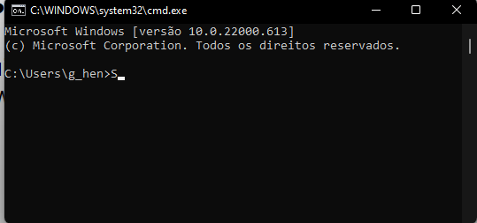

Organização das pastas no Windows
Cada Sistema Operacional possui uma forma específica de organizar e manipular as pastas. Para notar isto no Windows, basta que entremos no prompt de comando. Basta apertar nas teclas:
Windows + R + CMD + ENTER
Perceba que na última linha temos escrito:
- C:\User\g_hen>
- C: = é o HD (raíz)
- User = é uma pasta
- g_hen = é outra pasta
Ou seja, cada pasta guarda outra, pode guardar diretórios e arquivos das mesma forma. O movimento é sempre de fora pra dentro, ou seja, "g_hen" fica dentro de "User" que, por fim, fica dentro do "C:" que é a unidade de armazenamento.